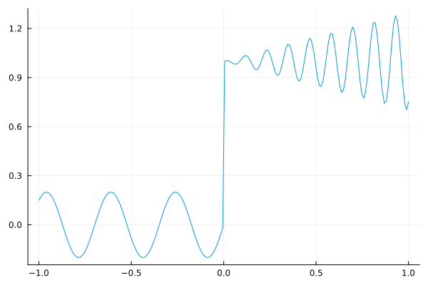
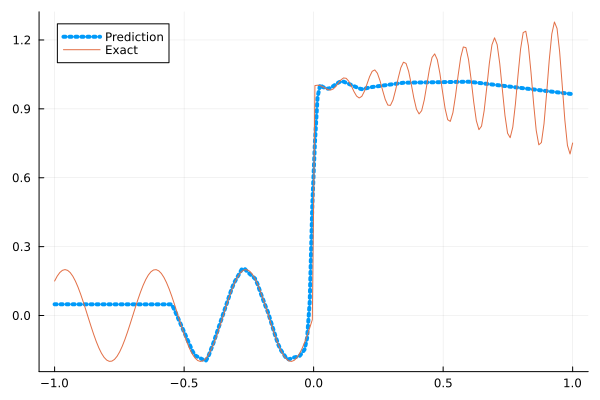
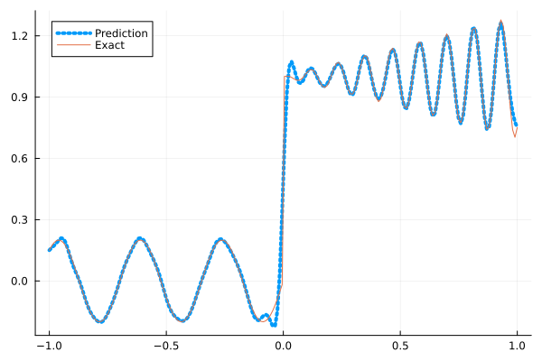
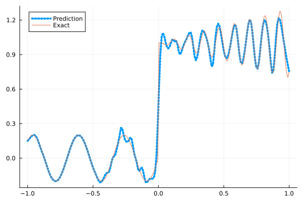
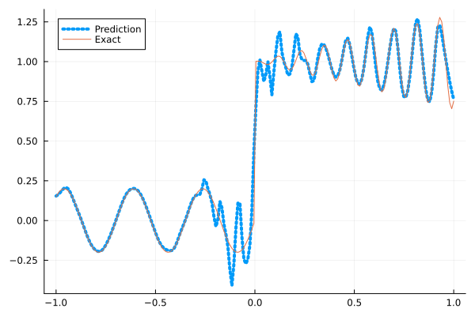

Fitting a nonlinear discontinuous function
This example is taken from here. However, we do not use adaptive activation functions. Instead, we show that using suitable non-parametric activation functions immediately performs better.
Consider the following discontinuous function with discontinuity at $x=0$:
\[u(x)= \begin{cases}0.2 \sin (18 x) & \text { if } x \leq 0 \\ 1+0.3 x \cos (54 x) & \text { otherwise }\end{cases}\]
The domain is $[-1,1]$. The number of training points used is 50.
Import pacakges
using Lux, Sophon
using NNlib, Optimisers, Plots, Random, StatsBase, ZygoteDataset
function u(x)
if x <= 0
return 0.2 * sin(18 * x)
else
return 1 + 0.3 * x * cos(54 * x)
end
end
function generate_data(n=50)
x = reshape(collect(range(-1.0f0, 1.0f0, n)), (1, n))
y = u.(x)
return (x, y)
endgenerate_data (generic function with 2 methods)Let's visualize the data.
x_train, y_train = generate_data(50)
x_test, y_test = generate_data(200)
Plots.plot(vec(x_test), vec(y_test),label=false)
Naive Neural Nets
First we demonstrate show naive fully connected neural nets could be really bad at fitting this function.
model = FullyConnected((1,50,50,50,50,1), relu)Chain(
layer_1 = Dense(1 => 50, relu), # 100 parameters
layer_2 = Dense(50 => 50, relu), # 2_550 parameters
layer_3 = Dense(50 => 50, relu), # 2_550 parameters
layer_4 = Dense(50 => 50, relu), # 2_550 parameters
layer_5 = Dense(50 => 1), # 51 parameters
) # Total: 7_801 parameters,
# plus 0 states, summarysize 80 bytes.Train the model
function train(model, x, y)
ps, st = Lux.setup(Random.default_rng(), model)
opt = Adam()
st_opt = Optimisers.setup(opt,ps)
function loss(model, ps, st, x, y)
y_pred, _ = model(x, ps, st)
mes = mean(abs2, y_pred .- y)
return mes
end
for i in 1:2000
gs = gradient(p->loss(model,p,st,x,y), ps)[1]
st_opt, ps = Optimisers.update(st_opt, ps, gs)
if i % 100 == 1 || i == 2000
println("Epoch $i || ", loss(model,ps,st,x,y))
end
end
return ps, st
endtrain (generic function with 1 method)Plot the result
@time ps, st = train(model, x_train, y_train)
y_pred = model(x_test,ps,st)[1]
Plots.plot(vec(x_test), vec(y_pred),label="Prediction",line = (:dot, 4))
Plots.plot!(vec(x_test), vec(y_test),label="Exact",legend=:topleft)Epoch 1 || 0.33188629019609167
Epoch 101 || 0.017610454753270086
Epoch 201 || 0.01590713114317587
Epoch 301 || 0.015692723306801368
Epoch 401 || 0.015499921539362194
Epoch 501 || 0.015022846946926184
Epoch 601 || 0.014119010550290008
Epoch 701 || 0.01355472205421048
Epoch 801 || 0.01286041933505815
Epoch 901 || 0.012730205062105761
Epoch 1001 || 0.012551913482858694
Epoch 1101 || 0.012393225071582772
Epoch 1201 || 0.012333173804791384
Epoch 1301 || 0.012305958626954619
Epoch 1401 || 0.012500149044091503
Epoch 1501 || 0.012207294486306837
Epoch 1601 || 0.012180824431578223
Epoch 1701 || 0.012321478928491905
Epoch 1801 || 0.012163180401562425
Epoch 1901 || 0.012131153797867302
Epoch 2000 || 0.012166675365203857
10.551744 seconds (10.43 M allocations: 1.344 GiB, 4.79% gc time, 91.48% compilation time)
Siren
We use four hidden layers with 50 neurons in each.
model = Siren(1,50,50,50,50,1; omega = 30f0)Chain(
layer_1 = Dense(1 => 50, sin), # 100 parameters
layer_2 = Dense(50 => 50, sin), # 2_550 parameters
layer_3 = Dense(50 => 50, sin), # 2_550 parameters
layer_4 = Dense(50 => 50, sin), # 2_550 parameters
layer_5 = Dense(50 => 1), # 51 parameters
) # Total: 7_801 parameters,
# plus 0 states, summarysize 88 bytes.@time ps, st = train(model, x_train, y_train)
y_pred = model(x_test,ps,st)[1]
Plots.plot(vec(x_test), vec(y_pred),label="Prediction",line = (:dot, 4))
Plots.plot!(vec(x_test), vec(y_test),label="Exact",legend=:topleft)Epoch 1 || 1.3874799780666622
Epoch 101 || 0.0008960784147259257
Epoch 201 || 7.159477388836364e-5
Epoch 301 || 8.145728757654534e-6
Epoch 401 || 6.106319024656112e-7
Epoch 501 || 2.775570152611974e-8
Epoch 601 || 7.638840918295787e-10
Epoch 701 || 1.5500797194791272e-11
Epoch 801 || 8.703596790042872e-13
Epoch 901 || 1.546130674331535e-13
Epoch 1001 || 4.659211794771692e-14
Epoch 1101 || 3.282802114124379e-14
Epoch 1201 || 3.053552036550475e-14
Epoch 1301 || 3.681534370064076e-14
Epoch 1401 || 3.8007267369571874e-14
Epoch 1501 || 2.971387515988347e-14
Epoch 1601 || 5.737784829956215e-14
Epoch 1701 || 2.2572634440149818e-14
Epoch 1801 || 3.1298807983153834e-14
Epoch 1901 || 6.758314022400097e-14
Epoch 2000 || 5.015591172259076e-14
4.766138 seconds (4.92 M allocations: 1.132 GiB, 5.59% gc time, 76.79% compilation time)
As we can see the model overfits the data, and the high frequencies cannot be optimized away. We need to tunning the hyperparameter omega
model = Siren(1,50,50,50,50,1; omega = 10f0)Chain(
layer_1 = Dense(1 => 50, sin), # 100 parameters
layer_2 = Dense(50 => 50, sin), # 2_550 parameters
layer_3 = Dense(50 => 50, sin), # 2_550 parameters
layer_4 = Dense(50 => 50, sin), # 2_550 parameters
layer_5 = Dense(50 => 1), # 51 parameters
) # Total: 7_801 parameters,
# plus 0 states, summarysize 88 bytes.@time ps, st = train(model, x_train, y_train)
y_pred = model(x_test,ps,st)[1]
Plots.plot(vec(x_test), vec(y_pred),label="Prediction",line = (:dot, 4))
Plots.plot!(vec(x_test), vec(y_test),label="Exact",legend=:topleft)Epoch 1 || 0.5583983659689962
Epoch 101 || 0.00645857313492525
Epoch 201 || 0.00478190576436298
Epoch 301 || 0.0037258171453556023
Epoch 401 || 0.002818887754061115
Epoch 501 || 0.0019450225083156613
Epoch 601 || 0.0012226915232845911
Epoch 701 || 0.0006755994729176374
Epoch 801 || 0.00027376067426915246
Epoch 901 || 9.265582113965016e-5
Epoch 1001 || 3.9926569721556e-5
Epoch 1101 || 2.5018839738874438e-5
Epoch 1201 || 1.984088697604019e-5
Epoch 1301 || 1.7145580550307544e-5
Epoch 1401 || 1.5277675044544768e-5
Epoch 1501 || 1.3840455306460292e-5
Epoch 1601 || 1.2680700709264882e-5
Epoch 1701 || 1.1717642739023966e-5
Epoch 1801 || 1.0959145365067564e-5
Epoch 1901 || 1.0202286083518655e-5
Epoch 2000 || 1.0864651478129018e-5
0.901949 seconds (1.15 M allocations: 892.462 MiB, 4.48% gc time)
Gaussian activation function
We can also try using a fully connected net with the gaussian activation function.
model = FullyConnected((1,50,50,50,50,1), gaussian)Chain(
layer_1 = Dense(1 => 50, gaussian), # 100 parameters
layer_2 = Dense(50 => 50, gaussian), # 2_550 parameters
layer_3 = Dense(50 => 50, gaussian), # 2_550 parameters
layer_4 = Dense(50 => 50, gaussian), # 2_550 parameters
layer_5 = Dense(50 => 1), # 51 parameters
) # Total: 7_801 parameters,
# plus 0 states, summarysize 80 bytes.@time ps, st = train(model, x_train, y_train)
y_pred = model(x_test,ps,st)[1]
Plots.plot(vec(x_test), vec(y_pred),label="Prediction",line = (:dot, 4))
Plots.plot!(vec(x_test), vec(y_test),label="Exact",legend=:topleft)Epoch 1 || 0.29571343436816333
Epoch 101 || 0.005822883055575043
Epoch 201 || 0.004915034502674509
Epoch 301 || 0.004343076977510021
Epoch 401 || 0.004077056298174234
Epoch 501 || 0.003910085806884714
Epoch 601 || 0.0036561627433961217
Epoch 701 || 0.00242942458536471
Epoch 801 || 4.1472016412469405e-5
Epoch 901 || 2.3491554838279797e-6
Epoch 1001 || 2.0806579054320132e-5
Epoch 1101 || 5.0655951871535474e-8
Epoch 1201 || 8.609923589618205e-8
Epoch 1301 || 2.5752645592163895e-8
Epoch 1401 || 3.7184712410065006e-9
Epoch 1501 || 1.3912187642411324e-9
Epoch 1601 || 4.95703581016919e-8
Epoch 1701 || 3.6839843899651443e-6
Epoch 1801 || 2.1482189635205783e-6
Epoch 1901 || 4.682617484654864e-5
Epoch 2000 || 1.0701638258069423e-7
4.729451 seconds (4.80 M allocations: 1.124 GiB, 5.36% gc time, 75.92% compilation time)
Quadratic activation function
quadratic is much cheaper to compute compared to the Gaussain activation function.
model = FullyConnected((1,50,50,50,50,1), quadratic)Chain(
layer_1 = Dense(1 => 50, quadratic), # 100 parameters
layer_2 = Dense(50 => 50, quadratic), # 2_550 parameters
layer_3 = Dense(50 => 50, quadratic), # 2_550 parameters
layer_4 = Dense(50 => 50, quadratic), # 2_550 parameters
layer_5 = Dense(50 => 1), # 51 parameters
) # Total: 7_801 parameters,
# plus 0 states, summarysize 80 bytes.@time ps, st = train(model, x_train, y_train)
y_pred = model(x_test,ps,st)[1]
Plots.plot(vec(x_test), vec(y_pred),label="Prediction",line = (:dot, 4))
Plots.plot!(vec(x_test), vec(y_test),label="Exact",legend=:topleft)Epoch 1 || 0.3202170344354231
Epoch 101 || 0.006890593820263719
Epoch 201 || 0.005706118423088847
Epoch 301 || 0.005178488917557678
Epoch 401 || 0.004677445743264864
Epoch 501 || 0.004029830522479998
Epoch 601 || 0.0027479721155889425
Epoch 701 || 0.0015024335744627012
Epoch 801 || 0.0006577027741500627
Epoch 901 || 0.00015686190173237613
Epoch 1001 || 0.00010214650123579199
Epoch 1101 || 6.529993361904737e-6
Epoch 1201 || 6.360751502469089e-6
Epoch 1301 || 8.057306588971917e-6
Epoch 1401 || 1.1228136862711623e-6
Epoch 1501 || 1.721807430763216e-5
Epoch 1601 || 4.214318953311372e-5
Epoch 1701 || 2.8974300358089278e-8
Epoch 1801 || 3.669794702839341e-6
Epoch 1901 || 5.804832810691327e-6
Epoch 2000 || 3.6276681028689405e-5
4.067586 seconds (4.55 M allocations: 1.107 GiB, 5.13% gc time, 81.47% compilation time)
Conclusion
"Neural networks suppresse high frequency components" is a misinterpretation of the spectral bias. The accurate way of putting it is that the lower frequencies in the error are optimized first in the optimization process. This can be seen in Siren's example of overfitting data, where you do not have implicit regularization. The high frequency in the network will never go away because it has fitted the data perfectly.
Mainstream attributes the phenomenon that neural networks "suppress" high frequencies to gradient descent. This is not the whole picture. Initialization also plays an important role. Siren mitigats this problem by initializing larger weights in the first layer, while activation functions such as gassian have large enough gradients and sufficiently large support of the second derivative with proper hyperparameters. Please refer to Vincent Sitzmann, Julien Martel, Alexander Bergman, David Lindell, Gordon Wetzstein (2020), Sameera Ramasinghe, Simon Lucey (2021) and Sameera Ramasinghe, Lachlan MacDonald, Simon Lucey (2022) if you want to dive deeper into this.